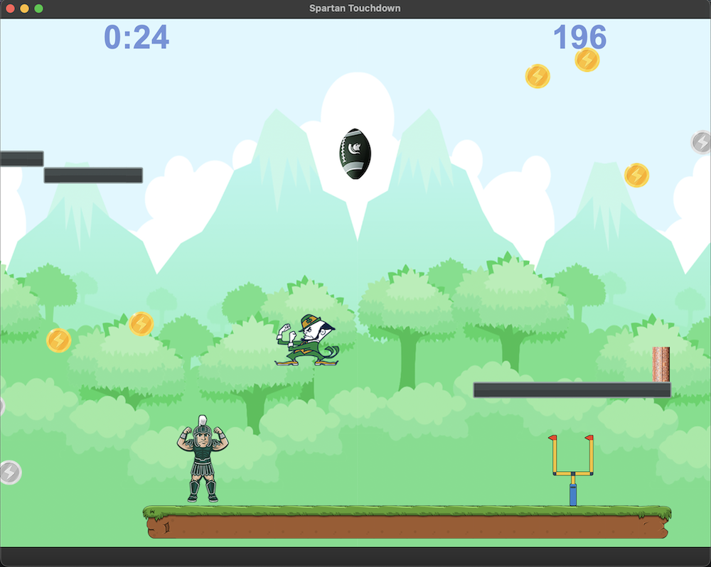
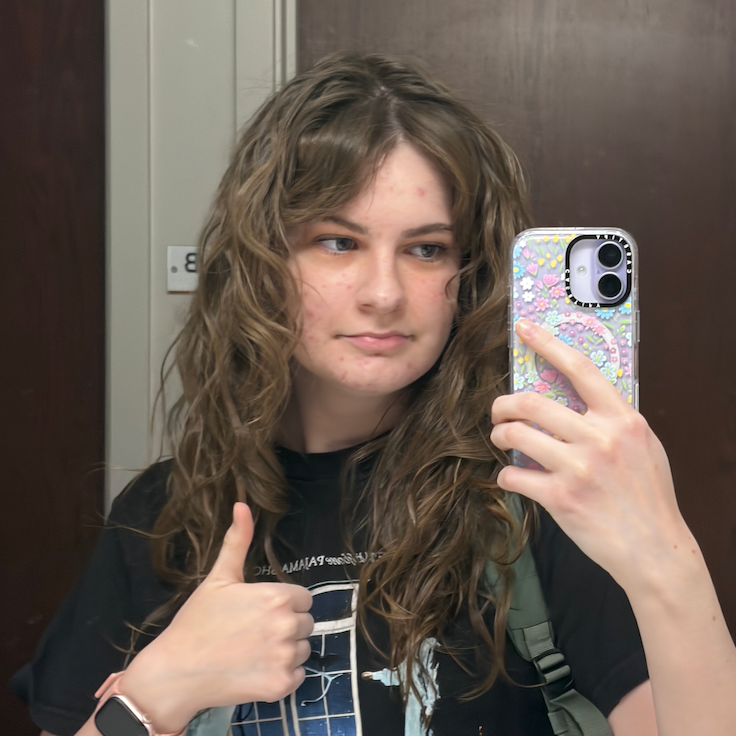
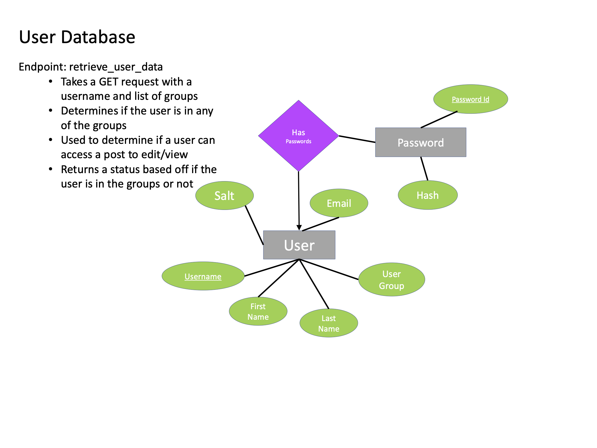

Spartan Touchdown

A 2D platformer style game coded in c++

^ Gwen Haslett :)
I am a senior at MSU majoring in computer science through the MSU College of Engineering. I am a student supervisor at the on campus Starbucks, and have been working there for almost 4 years. I have enjoyed coding since I was in highschool and I hope to graduate and gain experience in software deveolpment. One of my long term goals since starting programming has been to create a videogame and I hope to achieve this post grad.
I enjoy playing video games in my free time.

A 2D platformer style game coded in c++

A social media style program constructed through python and SQL databases.
I am proficient in C++, Python, and SQL, and am currently learning HTML and CSS.
Please don't
(but if you insist, you can reach me via carrier pigeon)